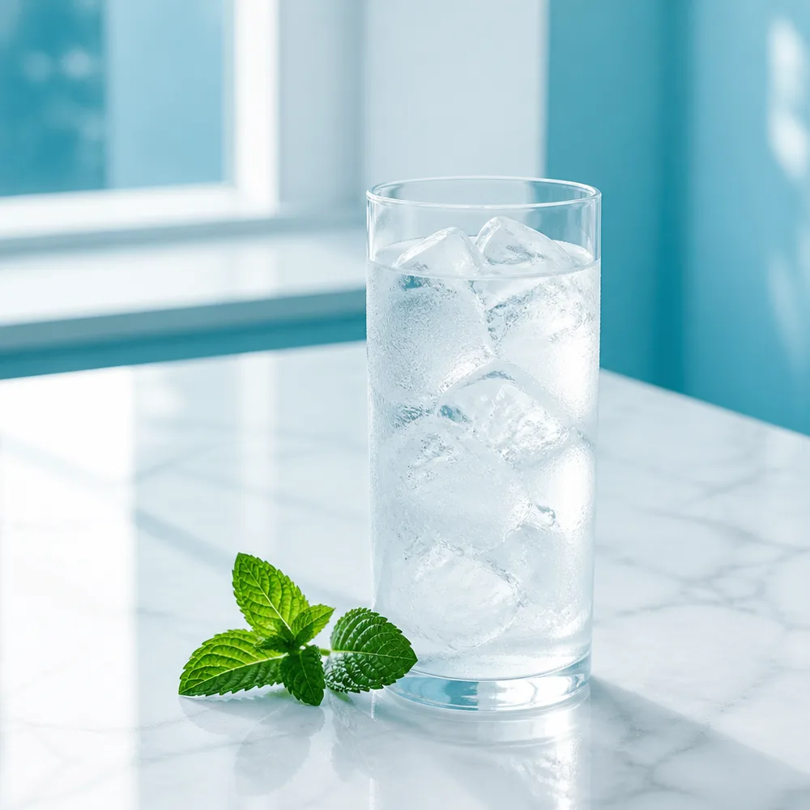
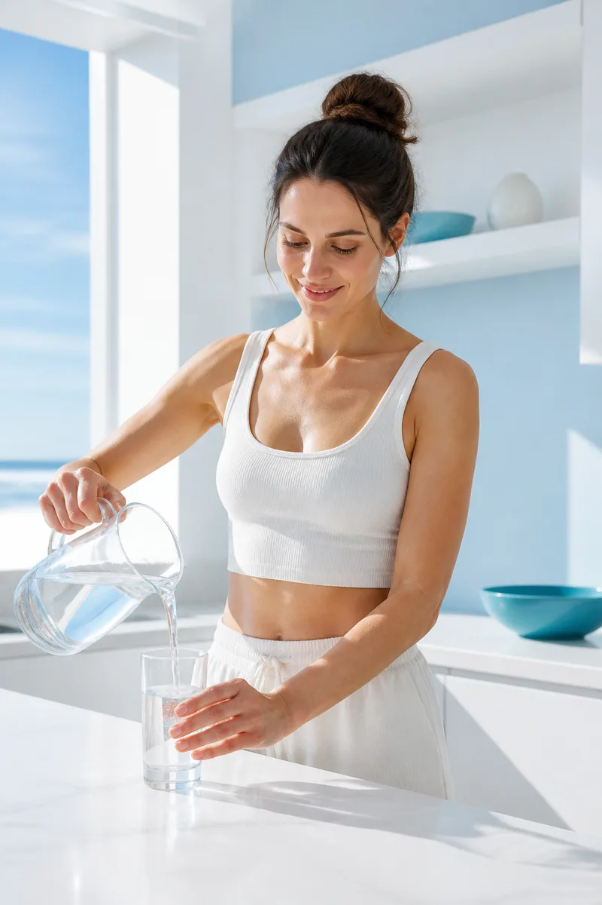
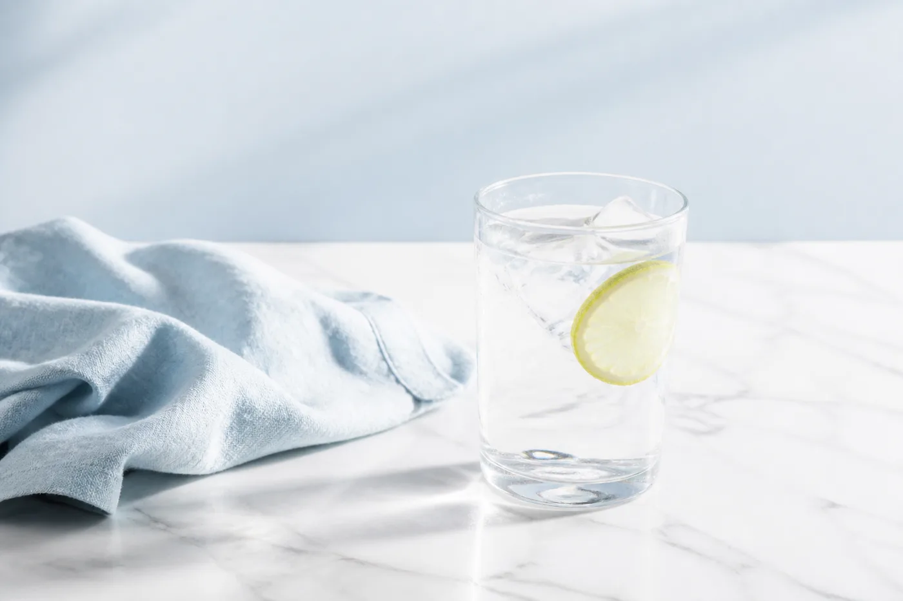

Support cellular hydration
Supports the movement of water into your cells, not just through you.
Free 3 day trial · We mail it to you
Nueva Revive is a cellular hydration sachet. One stick, 8oz of water, under a minute. It is built on Nueva's Aquivance Five-Layer Hydration Technology. Give us an address and we'll send you three days of it.
We won't ask you for a card, and there's nothing to cancel.
* Subject to sample availability

What it does
There is no stimulant in it. Revive works with the minerals and aminos your body already uses to move water into your cells. Here is what it supports.
Supports the movement of water into your cells, not just through you.
Sodium, potassium and magnesium, the three you lose most when you sweat.
Glycine and L-taurine, two aminos your body uses when it is recovering.
Even energy, with no stimulant and no crash at three o'clock.
SolarSea AC marine trace minerals and coconut water powder.
Shilajit and vitamin C, both in every stick.
Three days of Nueva Revive, free, in the mail.
* Subject to sample availability
Who is drinking it

Get your free sample. Just tell us where to send it.
* Subject to sample availability
What is in it
Most hydration products are salt and sugar. Revive's formula is built in five groups.
Sodium, potassium and magnesium. The three you lose most when you sweat.
Glycine and L-taurine, both of which your body uses during recovery.
Coconut water powder plus SolarSea AC marine trace minerals.
The sample is free. We don't ask for a card.
* Subject to sample availability
The science
Get your free sample and decide for yourself.
* Subject to sample availability
Taste
Most people quit a supplement because they got tired of taking it. Revive is one stick into 8oz of water, once a day, and it is done in about a minute. Use a shaker bottle or a little coffee frother. It does not mix well with a spoon.
Three days is enough to know whether you would keep drinking it.
Single serve. Nothing to measure.
A shaker bottle or a coffee frother. A spoon will not do it.
About a minute, once a day, for three days.

One form. Then we mail it.
* Subject to sample availability
FAQ
Yes. Three sticks, mailed to you, at no cost. We don't ask for a card.
It's a physical product and we have to mail it to you. Your address is used for that and nothing else.
We confirm your address with you first, then it goes in the mail. Give it a few days from there.
Nothing. Order more if you want it. If not, that's the end of it.
The form takes about a minute.
* Subject to sample availability
Free 3 day trial
Fill in your name and where to send it. Three days later you'll know if you want more.
* Subject to sample availability
* Subject to sample availability. One trial per household while supplies last. These statements have not been evaluated by the Food and Drug Administration. This product is not intended to diagnose, treat, cure or prevent any disease.